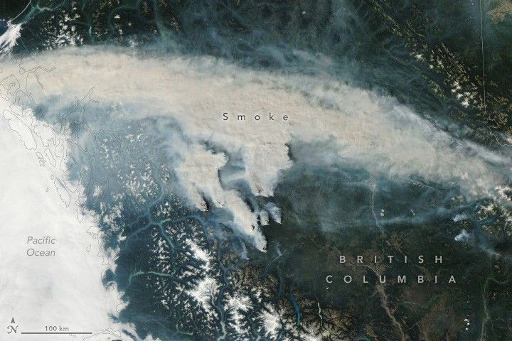

B.C. Wildfires Send Smoke Skyward
In early September 2025, warm and dry conditions gripped much of western Canada, creating ideal conditions for wildland fires. Thunderstorms then swept through the region, and lightning likely ignited several large fires during the first week of the month.
On the afternoon of September 2, 2025, the MODIS (Moderate Resolution Imaging Spectroradiometer) on NASA’s Aqua satellite captured smoke rising from wildfires in the Cariboo region of central British Columbia. Most fires were concentrated in the western part of this 8.2-million-hectare (20-million-acre) area.
The Itcha Lake fire, located toward the top-right of the cluster in the image, was one of the largest, having burned around 17,000 hectares as of September 3. The Beef Trail Creek and Dusty Lake fires burned approximately 7,800 and 2,800 hectares, respectively. Authorities including the Ulkatcho First Nation and Cariboo Regional District issued evacuation orders for communities near the Beef Trail Creek fire.
According to an August 27 report from the Canadian Wildland Fire Information System, British Columbia had burned 732,000 hectares so far in 2025, slightly above the 10-year average. In contrast, the burned area in Saskatchewan and Manitoba has soared above average, with around 2.9 million and 2.1 million hectares burned, respectively. News reports indicate that Canada is experiencing one of its worst fire seasons on record, surpassed only by 2023 in terms of total area burned.